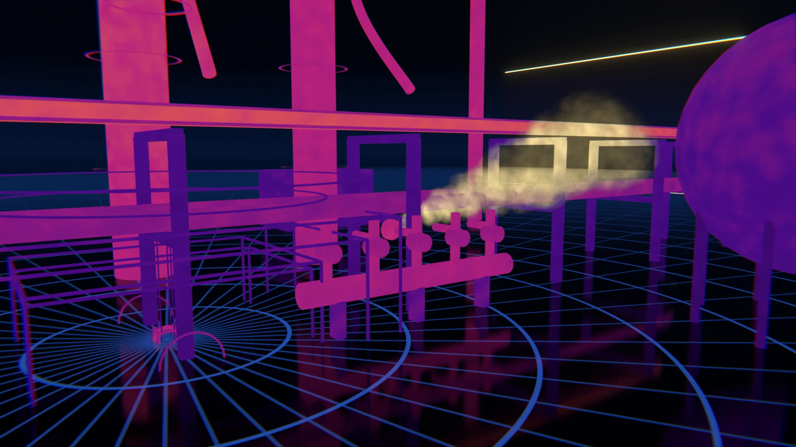
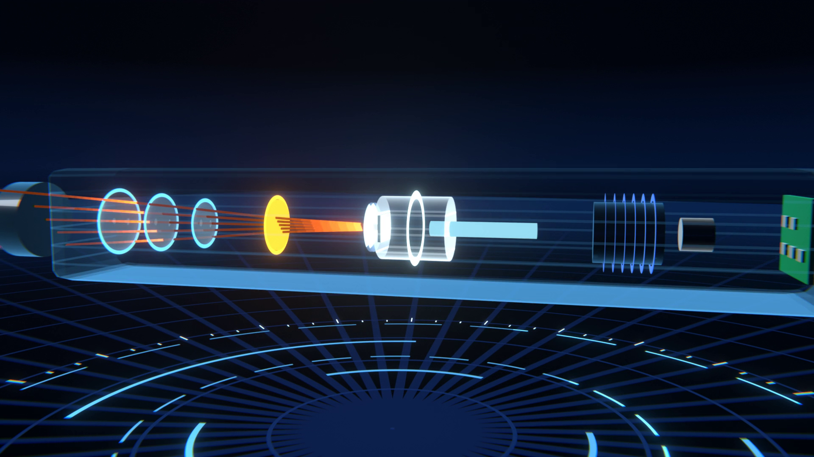

GLD NEXT · KONSEP PENGEMBANGAN
Optical Gas
Imaging
Melihat kebocoran hidrokarbon yang tak kasatmata, dari titik ke area.
PT Pertamina Patra Niaga (Fungsi Reliability)
LAPI Ganesha Utama · Institut Teknologi Bandung
Ilustrasi 3D
PRINSIP
Gas tak terlihat.
Kini tampak.
Ikatan karbon-hidrogen menyerap radiasi inframerah di sekitar 3,3 µm. Kamera dengan filter spektral sempit pada pita itu menampilkan gas sebagai kontras terhadap latar.

Lensa MWIRpita 3–5 µm
Filter spektral±3,3 µm, pita serapan C–H
Detektor berpendingin≈ −196 °C (77 K)
Ilustrasi 3D struktur umum kamera MWIR berpendingin.
Pita MWIRMid-Wave Infrared 3–5 µm, tempat hidrokarbon menyerap radiasi.
Filter sempitHanya meloloskan panjang gelombang serapan C–H.
Detektor dinginPendinginan menekan derau detektor, meningkatkan sensitivitas terhadap sinyal inframerah gas yang lemah.
SISTEM
Dari titik
ke area.
Kamera pada tiang ±10 m dengan pan-tilt berpatroli di sektor kritis: jalur pipa, manifold, dan klaster valve. Target jangkauan ±100 m.
Kamera MWIR→Edge server · AI segmentasi plume→Dashboard GLD + OGI
GLD + OGI, satu sistem
| GLD | Gas apa & seberapa pekat |
| OGI | Di mana & ke arah mana menyebar |
| Keduanya | Prioritas respons tertinggi |
Alarm yang terkonfirmasiAlarm dipicu hanya bila plume terdeteksi konsisten pada beberapa frame berturut-turut, sehingga gangguan flare dan pantulan panas ditekan.
Ilustrasi 3D konsep sistem.
MELENGKAPI GLD
Melengkapi,
bukan menggantikan.
3–5 µm
Pita Mid-Wave Infrared
−196 °C
Suhu kerja detektor
±100 m
Target jangkauan visualisasi
SPESIFIKASI TARGET
| Detektor | MCT berpendingin, 640 × 512 piksel |
| Frame rate | 100 Hz |
| Pemasangan | Tiang ±10 m, pan-tilt, patroli preset sektor |
| Kecerdasan | Segmentasi plume di edge server, konfirmasi multi-frame |
| Validasi | Uji pelepasan gas terkontrol |
| Batasan | Sistem OGI yang diusulkan dioptimalkan untuk deteksi hidrokarbon pada ±3,3 µm dan tidak dirancang untuk mendeteksi H₂, CO, atau H₂S; dapat ditangani oleh sistem GLD. |
ARAH PENGEMBANGAN
ModularDirancang untuk direplikasi di seluruh kilang Pertamina.
Emisi fugitifMendukung dokumentasi emisi fugitif.
Predictive maintenanceTermografi radiometrik: hot spot heater, isolasi rusak, steam trap.
Konsep pengembangan tahap berikutnya, belum termasuk ruang lingkup unit GLD saat ini. Spesifikasi merupakan target rancangan; seluruh gambar adalah ilustrasi 3D.
Lab Internet of Things
Institut Teknologi Bandung